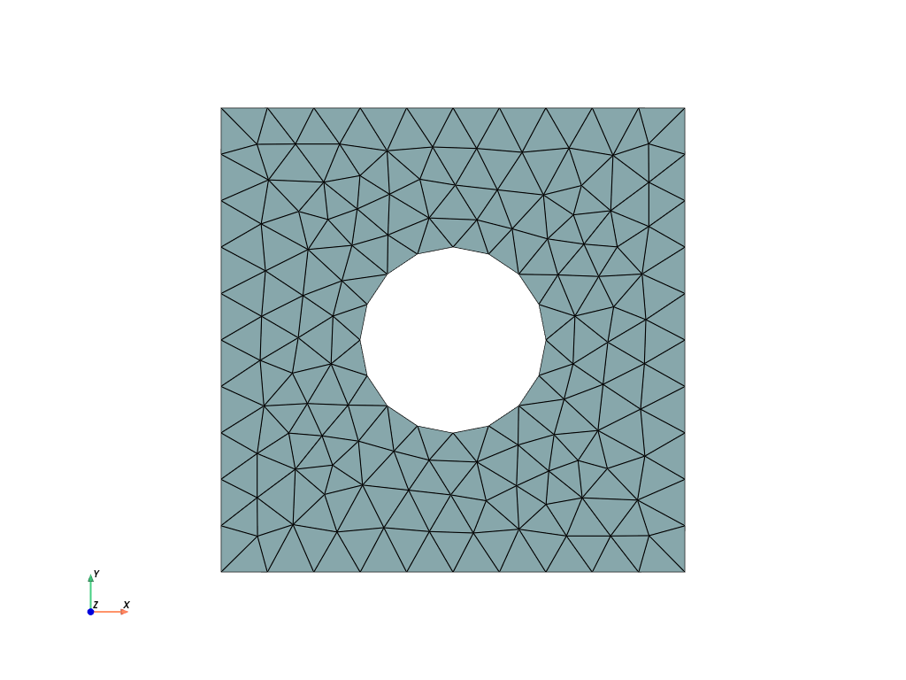

Importing a .msh file#
Objectives
We show here how to import a ".msh" mesh file generated with Gmsh externally and define the corresponding volume and surface integration measures.
Download sources
The geometry is a square plate of size \(L\) with a circular hole of radius \(R\). In the Gmsh file plate_hole.msh, the square domain boundary has been tagged 10 and the hole inner boundary as been tagged 20. We check that the corresponding area and perimeters match the expected values.
import numpy as np
from mpi4py import MPI
from dolfinx import io, fem
import ufl
L, R = 10, 2
domain, markers, facets = io.gmshio.read_from_msh("plate_hole.msh", MPI.COMM_WORLD)
dx = ufl.Measure("dx", domain=domain, subdomain_data=markers)
ds = ufl.Measure("ds", domain=domain, subdomain_data=facets)
area = fem.assemble_scalar(fem.form(1.0 * dx))
print(f"Expected area = {L**2-np.pi*R**2:.3f} Computed area = {area:.3f}")
length_1 = fem.assemble_scalar(fem.form(1.0 * ds(10)))
print(f"Expected length = {4*L:.3f} Computed length = {length_1:.3f}")
length_2 = fem.assemble_scalar(fem.form(1.0 * ds(20)))
print(f"Expected length = {2*np.pi*R:.3f} Computed length = {length_2:.3f}")
Info : Reading 'plate_hole.msh'...
Info : 19 entities
Info : 152 nodes
Info : 304 elements
Info : Done reading 'plate_hole.msh'
Expected area = 87.434 Computed area = 87.754
Expected length = 40.000 Computed length = 40.000
Expected length = 12.566 Computed length = 12.486
Show code cell source
import pyvista
from dolfinx import plot
pyvista.set_jupyter_backend("static")
topology, cell_types, geometry = plot.vtk_mesh(domain, 2)
grid = pyvista.UnstructuredGrid(topology, cell_types, geometry)
# Create plotter and pyvista grid
p = pyvista.Plotter()
p.add_mesh(grid, show_edges=True)
p.view_xy()
p.show_axes()
p.show()
